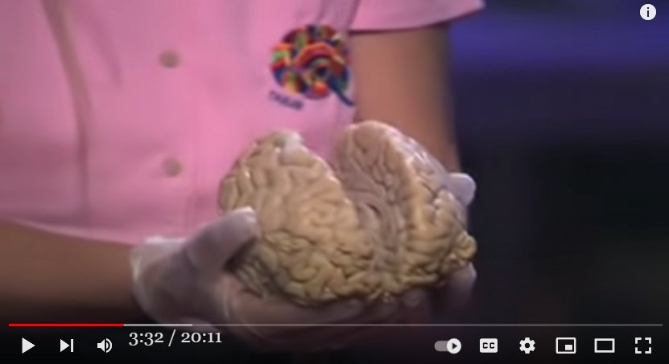

Jill Bolte Taylor : My left brain dysfunction caused Nirvana
Summary
- The Nirvana experience of a neurologist whose left brain became dysfunctional and later recovered was glimpsed in a previous article below.- This irreversible great enlightenment may be accompanied by a permanent inhibition (or shutdown) of some functions of the left brain. The suppression of some functions of the left brain may cause the realization of Nirvana to be perpetuated thereafter, and one may feel that one has departed from death and the bitterness of life. - The testimony of a female doctor (a neurologist) who suffered left brain damage for several weeks or months and later recovered, who was immersed in Nirvana during that period, in a TED talk (maybe mentioned in a previous article?), should reinforce this hypothesis. This should be a good support for this hypothesis. She stated that once her left brain function was restored, Nirvana ended and the suffering of her life resumed. - Incidentally, there is an interesting anecdote about when she first became aware of paralyzing symptoms of left brain function at home and called a fellow neurologist for help. It is not easy to make a phone call because the left brain function is paralyzed. Finally, the call went through, but this time she could not explain in words. All he can say is "oooh" or "ooh. When his colleague heard this, he said... (abbreviated) ref: Raymond Moody : Life crisis -> suicidal thoughts -> near-death experience -> realization that all is OK in the end, no matter how dire the reality. (2021-03-27)- Grant Cameron mentioned this experiencer. That led me to the name Jill Bolte Taylor, which I have recorded(*1).- Her Ted lecture video is below. She is giving a lecture with a (real) human brain in her hand. She also talks about her "All is One" experience around 9:00. ▼Click to expand
Summary
- Grant Cameron: A neurologist's experience with a brain injury there there was no way 34:55 i wasn't going there and i can remember if you have remembered jim jill bolte taylor who was the neuro anatomist from 35:01 harvard who had this left brain hemorrhage thing where she was out in the universe she was one with the universe and stuff like that and she 35:07 describes this experience of seven weeks with no fear whatsoever and and what does she say she 35:13 said you couldn't talk about it you could not talk about consciousness so we've come a long way and i make the 35:18 joke that even in you followed you today people talk about consciousness because they know it's a buzz word you better talk about it even though they haven't 35:24 got a clue what they're talking about they're starting to use the word we're starting to make a shift here where every time they bring up aVideo(2:04:19)
GRANT CAMERONVideo(20:11)
My stroke of insight | Jill Bolte TaylorMy view
- Her experience strongly supports my following assertion.- Thus I see the values of the spiritual and religious world as completely inverted. - ESP is a side-effect of brain bugs, not an advanced mental process. - Liberation and large enlightenment are the result of a disturbance in consciousness. - Channeling and mystical experiences are also the result of consciousness disorders. - ESP and psychokinesis are side effects of brain bugs. - OBEs and NDEs are also the result of disturbance of consciousness. ref: Video recording at a site where Bigfoot sightings were frequent: camera caught the orb as it appeared, and Bigfoot was spotted at the same time. (2022-03-24)
Article from Wikipedia
Jill Bolte Taylor (/ˈbɒlti/; born May 4, 1959) is an American neuroanatomist, author, and inspirational public speaker. Taylor began to study severe mental illnesses because she wanted to understand what makes the brain function the way it does and the cause between her dreams being distinguished from reality while her brother cannot disconnect his dreams from reality, making them a delusion. Taylor began working in a lab in Boston where they were mapping out the brain to figure out which cells communicate with which cells. On December 10, 1996, Taylor had a stroke — a blood vessel had erupted on the left side of her brain. She had been able to witness her own brain begin to shut down. Within a span of four hours, she could not speak, read, walk, write or remember anything from her past. Taylor compares her stroke to being like an infant again. Her personal experience with a massive stroke, experienced in 1996 at the age of 37, and her subsequent eight-year recovery, influenced her work as a scientist and speaker. It is the subject of her 2006 book My Stroke of Insight, A Brain Scientist's Personal Journey. She gave the first TED talk that ever went viral on the Internet, after which her book became a NY Times bestseller and was published in 30 languages.(*1)
- I checked and found a past article from three and a half years ago that glanced at her topic, but as usual, left it in the middle of the article. Jill Bolte Taylor : When my left brain ceased to function, it became one with the universe. (2018-10-15) (2022-04-17)
Thanks
- Translated with www.DeepL.com/Translator (free version)
(2022-08-14 translate)
First published article (Japanese)
Jill Bolte Taylor の左脳機能障害によるニルバーナ体験 (2022-04-17)